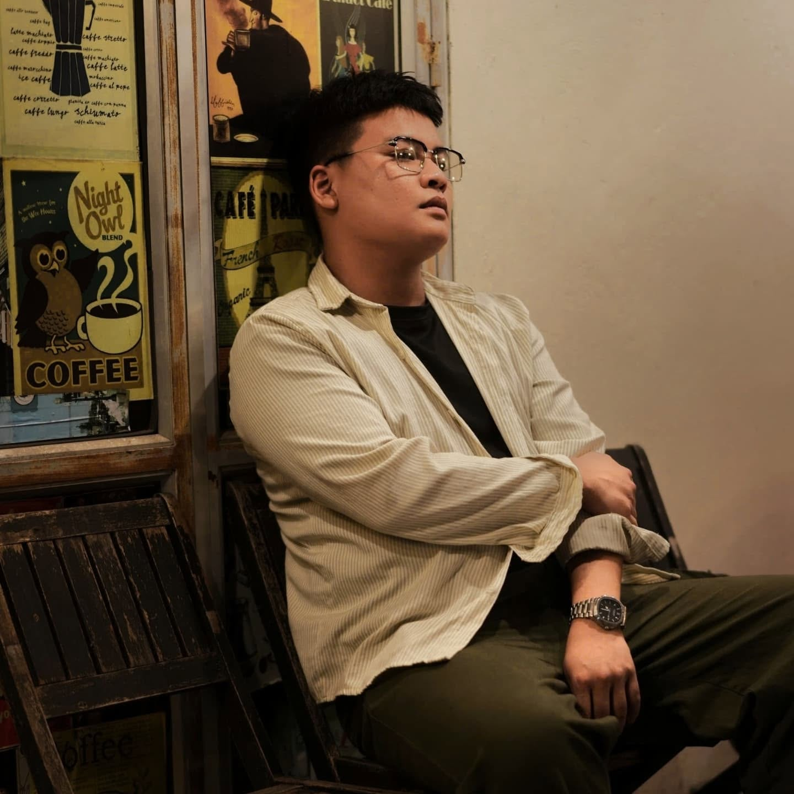

Phan Hải Nam
Bút danh: Tịch Lam
Tôi viết vì sợ quên. Sợ rằng một ngày nào đó, năm mươi năm nữa hoặc lâu hơn, những điều đẹp đẽ từng đi qua cuộc đời mình sẽ chỉ còn là những mảnh ký ức mờ nhạt. Tôi muốn lưu giữ chúng lại bằng con chữ, không phải để sống trong quá khứ, mà để nhiều năm sau nữa vẫn có thể tìm thấy nơi mình đã bắt đầu, những con người mình từng gặp và những cảm xúc đã từng khiến trái tim mình rung động.

Viết để giữ lại những điều đã đi qua
Tịch Lam là nơi tôi gửi lại những câu chuyện về tuổi thơ, tuổi trẻ, tình yêu và những giấc mơ của người trẻ. Có những điều khi đang sống trong nó, ta tưởng là bình thường. Chỉ đến khi lớn lên, quay đầu nhìn lại, ta mới hiểu rằng đó là những phần đẹp nhất của đời mình.
Mỗi tác phẩm trên website này là một mảnh ký ức khác nhau: có cuốn viết về mùa hè làng quê Bắc Bộ, có cuốn viết về bầu trời thanh xuân, có cuốn cất giữ một mối tình chưa từng được nói ra, và có cuốn dành cho những người trẻ đang học cách tự viết nên thời đại của mình.
Một hành trình đang được viết tiếp
Bắt đầu từ ký ức
Những câu chuyện đầu tiên được viết ra từ nỗi nhớ về tuổi thơ và những mùa hè đã xa.
Hình thành Tịch Lam
Bút danh Tịch Lam trở thành nơi lưu giữ những trang viết về tuổi trẻ, ký ức và giấc mơ.
Xây dựng thư viện tác phẩm
Bốn cuốn sách đầu tiên mở ra bốn miền cảm xúc: tuổi thơ, thanh xuân, tiếc nuối và khát vọng.
Tiếp tục viết
Mỗi chương mới là một cách để giữ lại những điều mà thời gian luôn tìm cách mang đi.